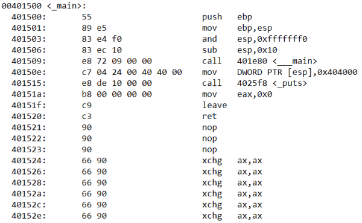

objdump (Dev-C++)
Debugger like
Immunity Debugger automatically decompile a program automatically
In the same Dev-C++ folder of the
gcc.exe compiler we have also
objdump.exe decompiler, to work with it if we have not already done it we have to
add MinGW64 bin folder to the environment variablesC:\Program Files (x86)\Dev-Cpp\MinGW64\binWith objdump we can disassemble executable programs to obtain a text file containing the assembly code of the program
objdump -d -Mintel InputFile.exe > OutputFile.txt
•
-d → tells the tool to disassemble the input file
•
-Mintel → is a disassembler option that allows us to select disassembly for the given architecture (Intel in our case)
•
> → tells the command what the output file is to be called
This is a part of what we have obtained (assembly code of the main())
